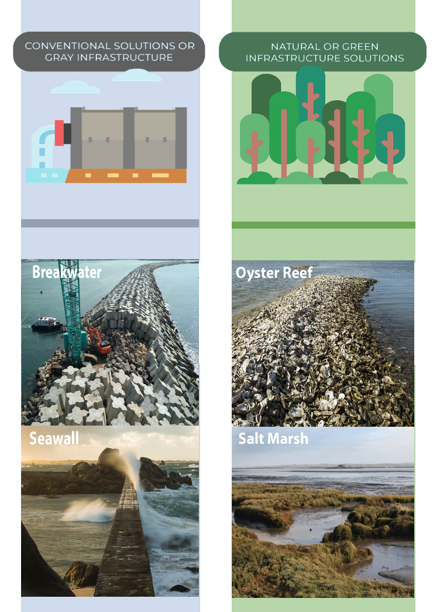

NATURAL COASTAL INFRASTRUCTURE
UBC Undergraduate 3 Minute Thesis Runner-up Award
Quantifying the Protective Value of Blue-Green Infrastructure in Disaster Mitigation
 Almost two-thirds of the world’s most populous cities are located in areas vulnerable to sea-level rise. Even if collective human intervention limits increases in global temperature to 2°C in the next 30 years, 570 cities around the world will still be affected by coastal inundation. While managed retreat may be the only option for cities particularly at-risk, others must proactively implement solutions to adapt to these predicted circumstances, which are quickly becoming a reality today. Known as blue-green infrastructure (BGI), the restoration and integration of natural landscapes within the urban fabric is emerging as an effective alternative to, and in some cases, co-intervention with grey infrastructure, such as sea-walls and bulkheads.
Using Metro Vancouver as a case study, this research is the first in the region to quantify the protective role of coastal natural infrastructure during disaster events. Though BGI has been implemented in a few low-wave energy sites in the Metro Vancouver area, namely along existing public beaches, British Columbia’s regulatory framework does not currently support blue-green infrastructure or soft engineering approaches for disaster mitigation. As the city shifts into the second phase of its sea-level rise strategy, quantifying the value of BGI in physical, social and economic terms could aid future mitigation efforts and help better communicate its benefits to stakeholders beyond the scientific realm.
PROJECT TYPE: Research, GIS analysis, Disaster resilience, Scientific modelling,
YEAR: 2019 - 2020 (in-progress)
Supervised by Dr. Naomi Schwartz
VIEW an overview of the research here and findings as of April 2020 here here